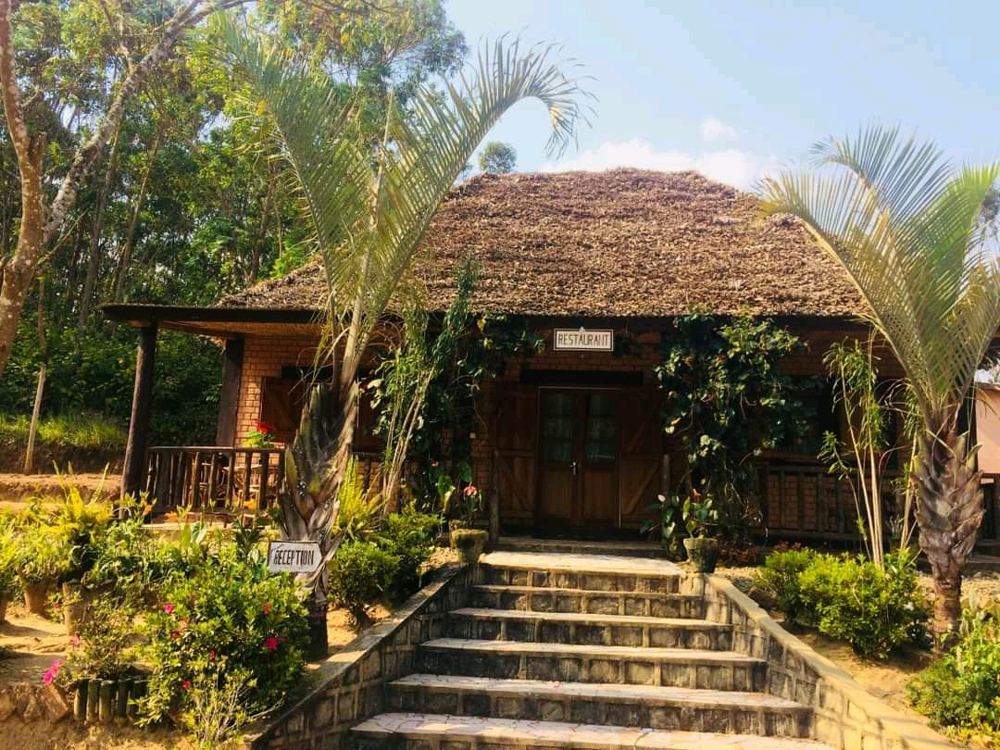
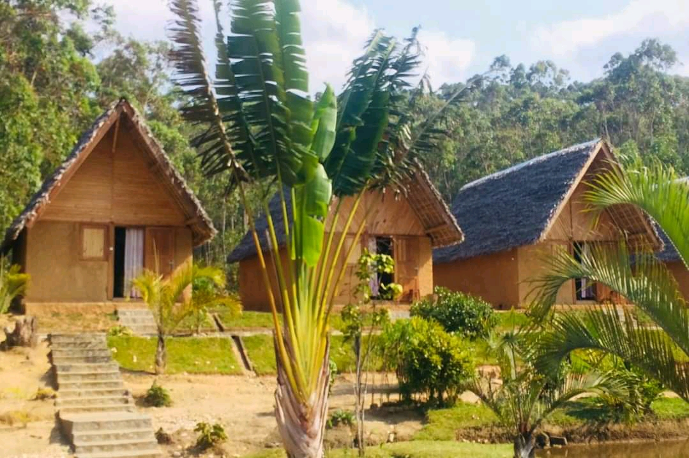
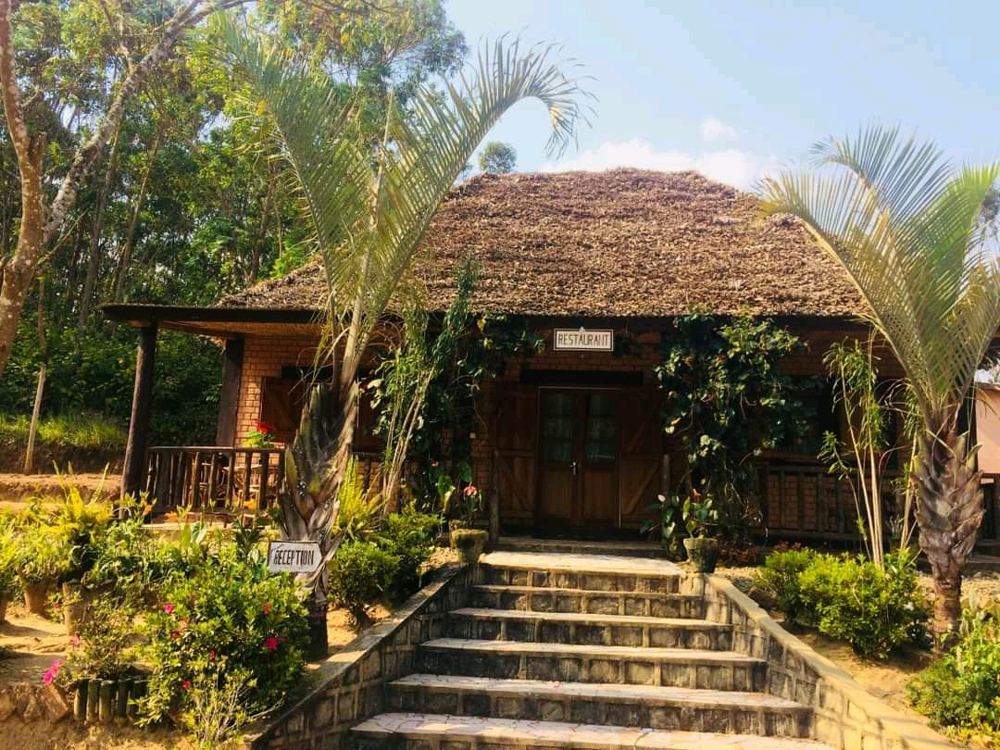
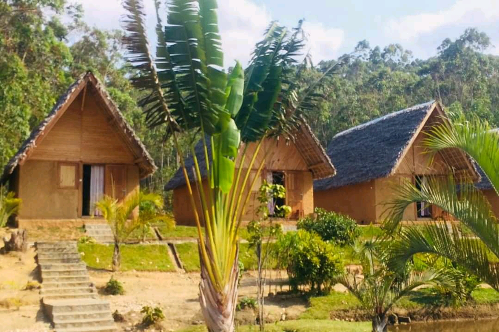

BLOG TOURISTIQUE
 



ANDASIBE FOREST LODGE
Si la plupart des hôtes d'andasibe se trouve du côtés gauche de RN2 en direction de toamasina, Andasibe Forest Lodge est quant à lui situé du côté droit, soit du coté opposé du parc mais juste à quelques minutes de celui-ci.
L'hôtel possède divers types de bungalows pouvant satisfaire différentes catégories de clients. Ses bungalows au toit de chaume sont très caractéristiques de la région. Ces bungalows entourent un petit étage dans lequel se dressent quelques arbres dont le fameux ravinala ou arbre des voyageurs.
Cet endroit est très recommandé pour ceux qui cherchent à la fois la simplicité, le confort et la sérénité.
retour